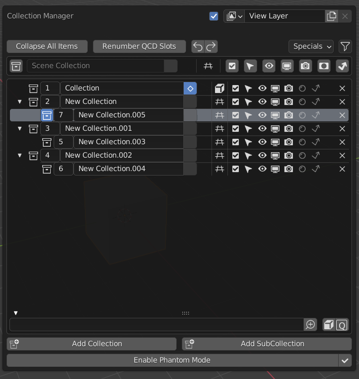
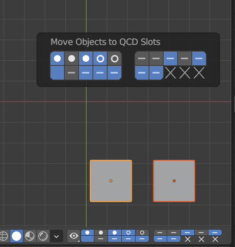

集合管理器¶
该插件通过3D视窗中的弹出窗口和 QCD （快速内容显示）系统增加了管理集合的新功能。它还提供简单的显示和修改对象与集合的关系。

|

|
激活¶
打开Blender并转到 "首选项" ，然后转到 "附加组件" 选项卡。
单击
界面，然后单击Collection Manager前钩上启用脚本。
描述:¶
弹窗¶
在对象模式下，使用 M 在3D视窗中调出主收集管理器弹出窗口。它也可以在 菜单中找到。
- 视图层
- 渲染
用这个复选框启用/禁用该视图层的渲染。
- 视图层
当前视图层的 数据块菜单 。
- 展开所有项目
切换所有集合的展开或折叠。只有当你有子集合时才启用。
- 重新编号QCD槽
只有在偏好中启用了 QCD 时才会显示。
LMB -- 对QCD槽进行重新编号，从根槽（指定为1的槽）往下，对每个深度层进行编号（广度第一的搜索 ）。
Alt-LMB -- 在 宽度第一搜索 模式中，从第一个顶层集合开始重新编号。
Ctrl-LMB -- 将重新编号模式切换为线性。这种模式将直接在列表中重新编号，而不考虑层次问题。
Shift-LMB -- 将重新编号限制在根槽下的分支。
Hint
所有选项都可以相互结合。
- 撤销
撤销之前的操作。
Note
清除任何正在进行的复制或交换操作。
- 重做
重做以前未做的动作。
- 其他菜单
- 移除空的集合
删除所有没有子集合或对象的集合。
- 清除所有没有对象的集合
删除所有没有对象的集合，不管它们是否有子集合。
- 显示选项（漏斗图标）
选择在界面中显示哪些限制性切换，以及限制性切换是否在树状视图中向右对齐。
- 场景集合
- 设置主动收集
将活动集合设置为场景集合。
- 名称
这是静态的，不能被编辑。
- 选择集合下的所有物体（多个图标）
LMB -- 选择集合中的所有对象（取消选择所有其他对象）。
Shift-LMB -- 将集合中的所有对象 加入/移出 选择。
Ctrl-LMB -- 选择所有物体和集合和子集（弃选其他物体）。
Shift-LMB -- 向集合中添加对象或从集合中删除对象。
使用图标和按钮高亮显示选择状态：
no icon-- 在这个集合中没有可选择的对象。no highlight-- 在这个集合中没有选择任何对象。钻石大纲-- 在集合中展示的物体。高光-- 一个或多个对象在这个集合中被选中。实心钻石-- 所有的对象都在这个集合中被选中。small dot and greyed out-- No objects can be selected in this collection (the collection is hidden or marked as not selectable or all objects are marked as not selectable, etc.). Note: The button isn't disabled to allow selecting subcollections; however, if you LMB click on it it will deselect all objects.
Hint
如果你试图选择集合中的所有对象，但钻石没有填满，这意味着你在集合中有一个或多个不可选择的对象。
- Set Object (multiple icons)
LMB -- 将选定的对象移至集合。
Shift-LMB -- 从集体里 添加/移除 选中的物体。
图标 用来显示 物体/选择 状态：
Grid-- No objects are present in this collection.方块大纲-- 对象存在，但在这个集合中没有被选中。3个带虚线的方框-- 该集合包含被选中的对象，但不包含选择中的活动对象。实心方框-- 集合中包含选择中的活动对象。
Note
活动物体也必须被选中才能被 指示/移动。
如果没有物体被选中，这个按键将被禁用。
- 全局限制（复选框，光标，眼睛，屏幕，相机，屏蔽，仅间接图标）
有关 限制 的信息，请参阅大纲页。
LMB -对所有集合启用限制。再次单击以还原以前的状态。
Shift-LMB --反转所有集合的限制状态。
Shift-Ctrl-LMB -- 隔离具有选定对象的集合。
Shift-Alt-LMB -- 禁用具有选定对象的集合。
Ctrl-LMB - 复制/粘贴 所有集合的限制状态。点击一个 RTO 来复制限制状态，然后点击另一个 RTO 来粘贴它。
Ctrl-Alt-LMB -- 将所有集合的限制状态与另一个限制的状态互换。点击一个RTO来复制限制状态，然后点击另一个RTO来调换两者。
Alt-LMB -- 丢弃以前的状态，以及为复制/粘贴或交换而储存的任何东西。
- 树视图
在当前选定的场景中显示集合。
- 披露（小三角图标）
LMB -- 扩展/折叠子集。
Shift-LMB -- 隔离树。除了当前项目和它的 父项/子项 ，其他的都会被折叠。再次点击以恢复之前的状态。
Ctrl-LMB -- 展开/折叠子集和它们的子集。
- 设置主动收集
单击以将活动集合设置为该集合。
- QCD槽
设置该系列对应的QCD插槽。（仅当QCD在偏好中被启用时显示）。
- 名称
双击 LMB -- 以重命名集合。
- 选择集合下的所有物体（多个图标）
LMB -- 选择集合中的所有对象（取消选择所有其他对象）。
Shift-LMB -- 将集合中的所有对象 加入/移出 选择。
Ctrl-LMB -- 选择所有物体和集合和子集（弃选其他物体）。
Shift-LMB -- 向集合中添加对象或从集合中删除对象。
Note
更多详情查看《场景集合》章节。
- Set Object (multiple icons)
LMB -- 将选定的对象移至集合。
Shift-LMB -- 从集体里 添加/移除 选中的物体。
Note
更多详情查看《场景集合》章节。
- 本地限制（复选框、游标、眼睛、屏幕、相机、暂停、仅间接图标）
LMB -- 切换集合的限制 开/关 。
Shift-LMB -- 隔离集合的限制，如果需要的话，保留父母。再次点击以恢复之前的状态。
Shift-Ctrl-LMB -- 隔离集合和它的后代的限制，如果需要的话，保留父母。再次点击以恢复之前的状态。
Ctrl-LMB -- 打开/关闭对集合和它的后代的限制。
Alt-LMB -- 丢弃以前的状态。
- 删除
X 删除集合。
- 过滤
- 按名称
用于按名称筛选集合的文本字段。
- Invert (magnifying glass icon)
反转过滤（反转树视图中显示的集合，以便隐藏显示的内容和隐藏显示的内容）。
- By Selected (box icon)
通过选定的对象过滤集合（只显示包含选定对象的集合）。
- 由QCD槽（Q键图标）。
按指定为QCD插槽的集合过滤集合（仅显示对应于QCD插槽的集合）。仅在首选项中启用QCD时显示。
Hint
所有选项都可以相互结合。
- 添加集合，添加子集合
（不言自明）
Note
如果添加集合时筛选了树视图，则在筛选更改之前，将显示不符合筛选规则的新集合。
- 幻影模式
禁用此模式时，在此模式下所做的所有可见性更改都将被放弃。
启用幻影模式可以保存限制的当前状态，并允许您编辑它们而不必担心丢失它们的当前状态。完成后，禁用幻影模式将恢复保存的状态。
注意：在幻影模式下，您将无法编辑限制以外的任何内容。
- 应用幻影模式（勾选标记图标）
在幻影模式下应用对RTO所做的所有更改并退出模式。
QCD¶
通过快速内容显示系统，您可以指定多达20个集合为QCD插槽，从而提供一种快速与集合交互的方式。然后，您可以使用热键或小部件查看或移动对象来与这些插槽进行交互。
3D视口页眉小工具¶
页眉小工具由快速视图切换按钮和20个QCD插槽组成。
- 快速视图切换（眼睛图标）
启用所有QCD插槽。
启用所有隔离的QCD插槽。（启用所有QCD插槽并禁用任何非QCD插槽）
= -- 隔离选定的对象集合.
禁用所选对象集合。
LMB -- 激活所有 QCD 槽。
Ctrl-Alt-= -- 取消所有连接。
选择所有QCD对象。（选择所有属于启用的QCD插槽的对象）
丢弃QCD历史记录。（丢弃以前的QCD插槽状态）
快捷键
LMB -- 激活所有 QCD 槽。
Alt-LMB -- 选择所有QCD对象。
LMB 按住 -- 打开一个包含所有快速查看切换的菜单。
- 由QCD槽（Q键图标）。
五组中的两行中的20个按钮，其中第一行以槽1开始，第二行以槽11开始。
每个时隙的状态显示为以下指标的组合：
x-- 未分配的槽.未高亮-不可见插槽。highlighted-- 可见槽.no icon-- 槽内无物体。水平线图标--对象存在于此插槽中。圆形图标--选择此时隙中的一个或多个对象。点图标--活动对象位于此槽中。
快捷键
LMB -- 查看单一槽位，不包括所有其他槽位。
Shift-LMB -- 添加/删除 插槽 到/从 视图中。
Ctrl-LMB -- 将选定的对象移到槽中。
Shift-Ctrl-LMB --将所选对象添加到插槽或从插槽中删除。
Alt-LMB -- 用此槽中的对象替换选择。
Shift-Alt-LMB -- 向/从所选内容中添加/删除插槽对象。
移动小部件¶
使用 V 在对象模式下调用3D视口中的移动小部件。它也可以在: 菜单中找到。
移动小部件与3D视口标题小部件共享其布局和指示器。
快捷键
Ctrl-LMB -- 将选定的对象移到槽中。
Shift-Ctrl-LMB --将所选对象添加到插槽或从插槽中删除。
0 - 9 -- 将选定的对象移动到1-10槽（0是10槽）。
Alt-0 - Alt-9 -- 移动物体到11-20槽（0代表20槽）。
Shift-0 - Shift-9 -添加/删除选定对象到插槽1-10 (0是插槽10)。
Shift-Alt-0 - Shift-Alt-9 -添加/删除选定对象到插槽11-20 (0是插槽20)。
3D 视图 快捷键¶
物体模式
- QCD
0 - 9 -- 查看插槽1-10（0为插槽10）。不包括所有其他的。
Alt-0 - Alt-9 -- 查看11-20槽（0代表20槽）。不包括其他所有。
Shift-0 - Shift-9 -将插槽1-10 (0是插槽10)添加到视图/从视图中删除。
Shift-Alt-0 - Shift-Alt-9 - 添加/删除插槽11-20 (0是插槽20)到视图/从视图中。
Shift- = --启用所有QCD插槽。
= -- 隔离选定的对象集合.
Minus -- 禁用所选对象集合。
Shift-Alt- = -- 禁用所有非QCD插槽。
Ctrl-Alt-= -- 取消所有连接。
Shift-Ctrl-= -- 选择所有QCD物体.
Alt-= -- 丢弃QCD历史记录。
- 禁用对象（只有在首选项中启用时才可用。）
H -- 禁用选择。
Shift-H -- 禁用选择。
Alt-H -- 恢复已禁用的对象。
编辑模式
所有对象模式的热键，除了 "选择所有QCD对象" 和 "禁用对象" 热键。（只有在偏好设置中启用时才可用）。
AccentGrave -- 网络选择模式菜单。
Note
不能排除具有非对象模式的对象的插槽。
偏好设置¶
- 禁用对象而不是隐藏
将隐藏热键的对象替换为热键以禁用对象，并将这些选项添加到 菜单中。
禁用对象可以防止在关闭和打开集合的排除复选框时再次显示对象，因此在切换QCD插槽时将保持对象的可见性。
- QCD
启用QCD系统。
- QCD热键
启用或禁用选择 (使3D 视图中的物体
不可选择)。- QCD编辑模式快捷键
- 移动构件 ：
- 工具主题覆盖
启用本节中的覆盖以更改QCD移动小部件中单个元素的颜色（颜色默认为当前主题）。
- 图标 Alpha
所选（但不是活动）对象和未选对象的图标的不透明度。
Note
图标alpha的值不会被覆盖，并始终影响QCD移动小部件。
已知问题¶
不支持链接的集合。
两个QCD插槽可以交换集合，如果集合在同一个父级下，并且使用另一个名称重命名一个集合，然后撤消重命名并重做重命名。
词汇表¶
- 通用
- 链形
取决于RTO是否可以处于活动状态的父级。
- QCD
快速内容显示。
- QVT
快速查看切换。
- kbd:Ctrl-Alt-LMB -- 将所有集合的限制状态与另一个限制的状态互换。点击一个RTO来复制限制状态，然后点击另一个RTO来调换两者。
限制切换选项。
- 简短介绍
- EC
排除复选框。（从当前视图层中排除集合--同时影响3D视口和渲染--非链。）
- SS
可选择性。（禁用所有视图图层中的集合的选择--影响3D视口--链条。）
- VV
可见性。（从当前视图层隐藏集合--影响3D视口--链接。）
- DV
禁用视口。（禁用所有视图层中的集合-- --影响3D视口-- --链。）
- RR
可渲染性。（禁止在所有视图层中渲染集合-- --影响渲染-- --链。）
- 包含当前事件及渲染帧：
时:分:秒:帧。 屏蔽。（从视图层屏蔽集合--影响渲染--非链。）
- IO
仅间接。（使集合仅间接（阴影/反射）为当前视图层的渲染贡献--影响渲染--非链-- 仅 Cycles。）
参考
- 类别
界面
- 描述:
集合管理系统。
- 位置
3D 视图
- 文档
集合管理器
- 作者
Imaginer (Ryan Inch)
- 保持
imaginer
- 许可证
通用公共图书馆
- 支持级别
社区
- 注意
此附加组件与Blender捆绑在一起。